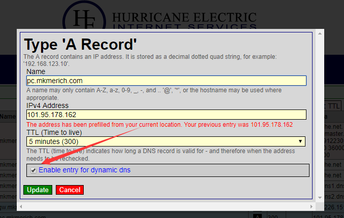
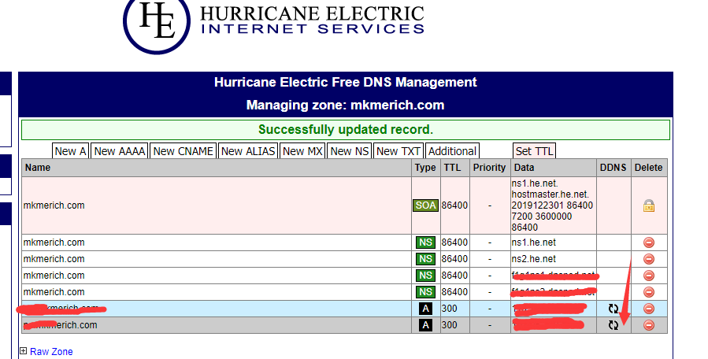

使用场景
配置
DDNS服务商选择
我只能说有很多，我认为dns.he.net比较朴素好用，功能很全。
添加A记录

- IPv4 Address : 这个他会自动给你填个你的公网出口ip,先不用管
- TTL ： 由于是动态dns, ip随时会变，所以我都设置为5分钟
- 最后打上勾【使能动态ddns】
添加动态更新IP脚本
具体文档可以参考这里
它提供的API很简单，一共2种形式：
1） 自动识别并更新ip，通过识别你的源ip
curl -4 "https://<your-sub-domain>:<api-key>@dyn.dns.he.net/nic/update?hostname=<your-sub-domain>"
2) 强制指定机器的ip, 如果你想局域网里用域名也成为现实
curl "https://<your-sub-domain>:<api-key>@dyn.dns.he.net/nic/update?hostname=<your-sub-domain>&myip=192.168.2.3"
api-key哪里来的，看下图：

参考脚本
#!/bin/bash ips=`/sbin/ifconfig -a | grep inet | grep -v 127.0.0.1 | grep -v inet6 | awk '{print $2}' | tr -d "addrs"` ip_array=($ips) #转为数组，ip可能有好几个 ip_1=${ip_array[0]} #选第一个ip, 如果要指定的就修改脚本吧 curl -4 "https://pc.mkmerich.com:<my-ip-key>@dyn.dns.he.net/nic/update?hostname=pc.mkmerich.com&myip=${ip_1}"
然后呢，做一个Linux定时任务，我懒省事就用crontab了
*/5 * * * * linux-user /path/to/my/shell-script/update-ip.sh
最后我在自己内网中就可以用 ssh my-user@pc.mkmerich.com来登录我的linux了，每次重启也不用担心不知道自己电脑ip是多少。